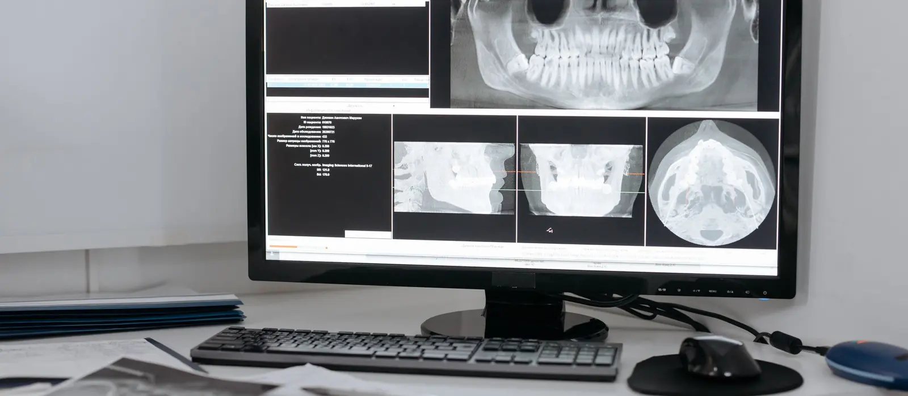
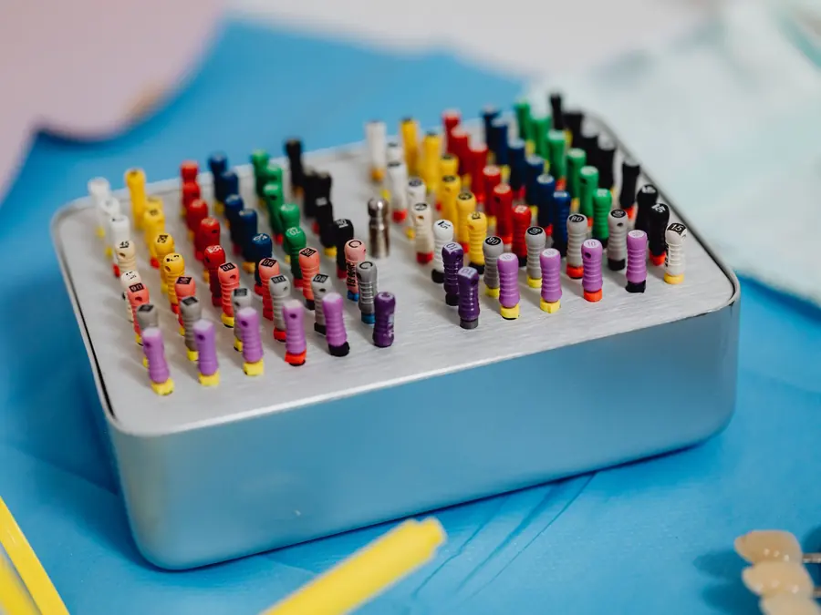

Root Canal
Treatment (RCT)
Saves an infected tooth by cleaning and sealing its root canals, so you keep your own tooth instead of losing it.
What a root canal treats
Inside every tooth, under the enamel and dentine, is a soft tissue called the pulp: the nerve and the blood vessels that fed the tooth while it was forming. The pulp runs down narrow channels — the root canals — inside each root. A front tooth usually has one. A molar has three or four, and they are rarely straight.
Deep decay, a crack, or a heavily filled tooth eventually lets bacteria reach that pulp. Once the pulp is infected it cannot recover, the pain does not settle on its own, and the infection travels down the canal and out of the root tip into the bone, where it forms an abscess.
Root canal treatment removes the infected tissue, cleans and disinfects the canals along their whole length, shapes them, and seals them so bacteria cannot get back in. The tooth stays where it is, in your jaw, still doing its job. The alternative is losing it.
It is not the appointment that hurts
Root canals have a reputation built on the pain that brings people in, not the pain of the treatment. With modern local anaesthesia and rotary instruments, sitting through an RCT is much like sitting through a large filling: pressure, vibration and time. Most patients describe the relief starting the same day.
Why the crown afterwards is not an upsell
A root-treated tooth has lost its blood supply, and a good deal of its structure was already lost to decay before anyone touched it. That combination makes it more brittle and more likely to split vertically under chewing force — and a tooth that splits below the gum usually cannot be saved at all.
A crown holds the remaining tooth together and spreads the load. Leaving a root-treated back tooth with only a temporary filling is the single most common reason a technically successful root canal fails a year or two later. If the crown appointment is planned, it is part of the treatment, not an extra.
Single-visit or two visits?
Where the tooth is not actively infected and the canals dry out cleanly, the whole treatment can be completed in one appointment. Where there is pus, swelling or a long-standing abscess, it is done over two: the canals are cleaned and a medicated dressing sealed inside, and the tooth is filled at the second visit once it has settled. Which of the two applies to your tooth is a clinical judgement, not a menu option, and you will be told the reason.
- Time in the chair
- 45–90 min per visit
- Visits
- One or two, plus the crown
- Anaesthetic
- Local, always
- Back to normal
- Same day, tender 2–3 days
What happens at
your appointment
So there are no surprises: this is the sequence root canal treatment follows at Evara Dental Clinic.
-
Diagnosis and X-ray
An examination and a digital X-ray confirm whether the pulp is genuinely involved, and show the shape and number of the canals and whether infection has reached the bone at the root tip. You see the X-ray and have the findings explained before anything is decided.
-
Local anaesthesia
The tooth and the surrounding area are numbed thoroughly. The procedure does not begin until you confirm the area is numb, and more anaesthetic is given if any sensation returns during the appointment.
-
Isolating the tooth
A rubber dam is placed so the tooth is sealed off from saliva. This is what keeps the canals from being re-contaminated while they are open, and it keeps the irrigating solutions out of your mouth. It also means you can swallow normally throughout.
-
Cleaning and shaping the canals
An opening is made in the crown of the tooth and the infected pulp is removed. Fine rotary files then clean and shape each canal along its full length, with disinfecting solution flushed through between passes. An electronic apex locator, checked against the X-ray, measures exactly where each root ends, so the canal is cleaned to the tip and no further.
-
Sealing the canals
Once the canals are clean, dry and shaped, they are filled with gutta-percha and a sealer, so there is no space left for bacteria to re-colonise. Where the tooth is infected or still weeping, a medicated dressing is sealed inside instead and the filling is completed at a second visit.
-
Rebuilding the tooth
The access opening is filled and, where a great deal of tooth has been lost, a post and core is placed to give the crown something to hold. The tooth is then prepared for a crown, which is fitted at a following appointment.
Aftercare
What you do in the days after treatment affects the result as much as the appointment itself.

- Mild tenderness for two to three days is normal, and usually responds to the pain relief you are prescribed. The ligament holding the tooth has been bruised; it settles.
- Avoid chewing hard food on that side until the permanent crown or filling is placed. A temporarily restored root-treated tooth splits easily, and a split root cannot be repaired.
- Complete the crown appointment. Leaving a root-treated back tooth without its final restoration is the most common reason the treatment fails later.
- If antibiotics were prescribed for swelling, finish the course even once the pain has gone.
- Call the clinic if the pain increases rather than settles, if swelling appears, or if the temporary filling comes out.
- The tooth still needs brushing, cleaning between the teeth and check-ups. A root-treated tooth cannot feel decay starting at its margins — that is exactly why it needs watching.
What it costs
You are given the cost of the root canal and of the crown separately, in writing, after the X-ray and before treatment starts. If it turns out to need two visits, you will know that at the outset.
What changes the price
How many canals the tooth has — a front tooth with one canal is a different job from a molar with four; whether this is a first treatment or a re-treatment of a previously filled tooth, which takes longer; whether a post and core is needed to rebuild the tooth; and which material the crown is made from.
Root canal treatment: common questions
Is root canal treatment painful?
The treatment is done under local anaesthetic and does not begin until you confirm the tooth and the area around it are numb. What most people feel is pressure and vibration. The pain root canals are famous for is the pain of the infection that brings people in — not the pain of the procedure that relieves it.
How many visits will it take?
One or two for the root canal itself, plus a separate appointment for the crown. A tooth with active infection, pus or swelling is usually treated over two visits with a medicated dressing in between, because the canals have to be clean and dry before they can be sealed.
Do I really need a crown afterwards?
For back teeth, almost always. The tooth has lost both its blood supply and a lot of structure, which makes it liable to split under chewing forces — and a tooth that splits below the gum usually cannot be saved. A crown holds what is left together. Front teeth with little loss of structure can sometimes be restored with a filling instead, and you will be told which applies.
Can antibiotics clear it up instead?
No. Once the pulp has died there is no blood supply left inside the tooth to carry an antibiotic into the canal, so the bacteria there are out of reach. Antibiotics can settle facial swelling, and are prescribed for that where it is needed, but the infection comes back unless the inside of the tooth is cleaned out.
Should I just have the tooth taken out?
Extraction is quicker and cheaper on the day, and it is the right answer for a tooth that genuinely cannot be restored. But it leaves a gap: neighbouring teeth drift and tilt into it, the tooth above or below over-erupts, and replacing it later with an implant or a bridge costs considerably more than saving it would have. Where the tooth is restorable, keeping your own is the better outcome. You will be shown the X-ray and told honestly which case yours is.
Why does my tooth still ache afterwards?
The ligament that suspends the tooth in the bone has been bruised, by the infection first and the treatment second, so tenderness on biting for two or three days is expected. Pain that increases instead of settling, or swelling that appears afterwards, is not expected — report it the same day.
How long will the tooth last?
Many years, and often for life, when the canals are properly sealed, the tooth is crowned and the gums around it stay healthy. What shortens it is a delayed crown, a fracture, or new decay at the margins — all of which are avoidable.
Will the tooth go dark?
A root-treated front tooth can darken over the years, because the tissue inside that gave it its translucency has gone. It is treatable: internal bleaching, a veneer or a crown, depending on the tooth. Back teeth are crowned anyway, so it does not arise.
Related treatments
Teeth Filling
Where decay is caught before it reaches the nerve, a filling is all the tooth needs.
Read more →Dental Implants
For a tooth that could not be saved: a replacement root and crown, without touching the neighbours.
Read more →Emergency Dental Care
Severe pain, facial swelling or a broken tooth — seen the same day wherever possible.
See all treatments →In pain? Call the clinic
Sector 18, Kharghar. Dental emergencies are seen the same day wherever possible.